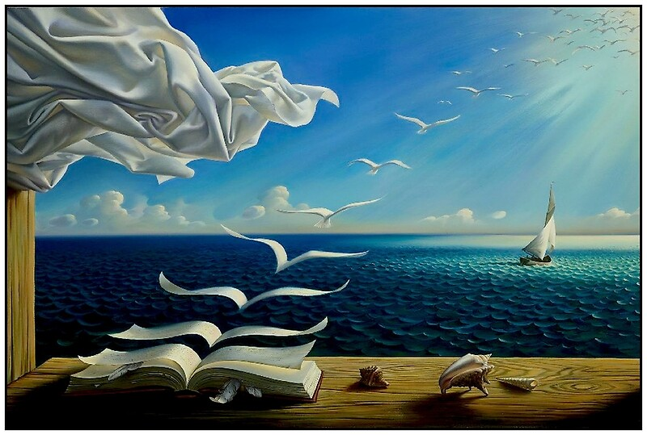
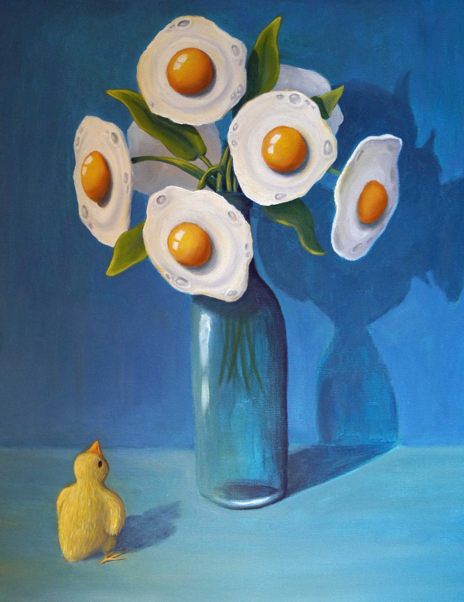

Computational Art
Project 2: Animated Surrealism Mash-Up
Me: Jacob Kelleran
Partner: James Cromeenes
My Reference Surrealist Image:
My Partner's Reference Surrealist Image:
Our Animated Surrealist Mash-Up (for a surpise click on the book and the vase! Try different combinations of both...):